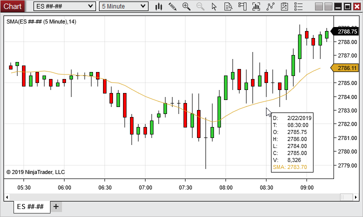
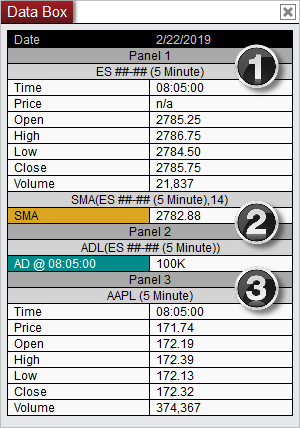
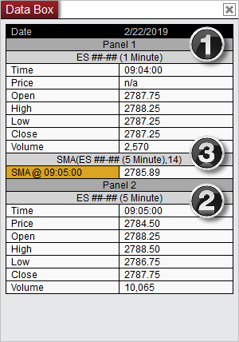
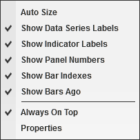
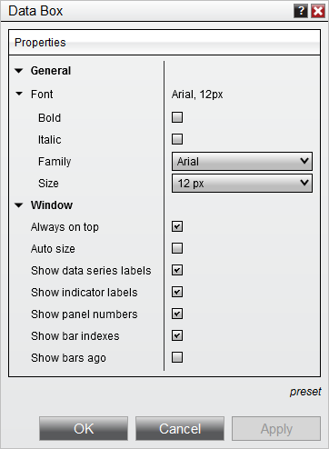

|
<< Click to Display Table of Contents >> Data Box |


|
Data Box
|
<< Click to Display Table of Contents >> Data Box |
|
The Data Box and Mini Data Box allow you to access both bar and indicator values on your chart at a glance. The Mini Data Box provides a compressed view of your chart data, while the Data Box provides a more comprehensive view of the data.
 Understanding the Mini Data Box
Understanding the Mini Data Box
Opening the Mini Data Box To access the Mini Data Box, hover your mouse cursor over the chart panel from which you would like to see values, then press down on your middle mouse button. After pressing and holding down your middle mouse button, the Mini Data Box will appear with a range of information related to the data series and indicators in the chart panel in which you click. You can then continue holding down your middle mouse button as you move around the chart to view values for other bars, or release your middle mouse button to hide the Mini Data Box once more.
Mini Data Box DisplayThe Mini Data Box displays the Date/Time, Open, High, Low, Close and Volume information of the selected bar on the chart, as well as the values of any indicators plotted in that chart panel. This view is ideal for quick access to information on a specific bar.

The display order of data in the Mini Data Box is as follows:
|
Opening a Data Box The Data Box displays all bar data and indicator values on your chart, based on your mouse cursor position. You can enable or disable this window via the right mouse click context menu, the Show Data Box chart toolbar icon, or by using the default shortcut CTRL+D. If you have multiple charts open, the Data Box will display the values of the chart over which your mouse cursor is currently hovering. Being able to use one Data Box for multiple charts eliminates the need to open multiple Data Boxes, which conserves monitor space.
Data Box DisplayThe Data Box displays the date at the top of the window, followed by additional data organized by panel. Under each panel heading, any data series displayed in that panel will be listed first, followed by any indicators displayed in that panel.

In the image above, we can see:
1. Panel 1 includes an ES ##-## data series and a 14-period SMA indicator using the ES ##-## as its input series.
2. Panel 2 includes an ADL indicator only, using the ES ##-## as its input series.
3. Panel 3 includes a second data series, AAPL, with no indicators.
The column splitter can be re-sized by hovering your cursor until the sizing arrows appear. Once the sizing arrows are showing you can press down on your left mouse button and drag the column splitter to the desired location, then release the left mouse button.
Indicator Time Stamps on Multi-Series ChartsIndicator plot names listed in the Data Box are followed by a time stamp indicating which bar time the corresponding indicator uses as its input series. This will allow you to quickly see which data series is being used by each indicator on a multi-series chart.

As an example, notice the following about the image above:
1. Panel 1 contains a 1 minute Data Series.
2. Panel 2 contains a 5 minute Data Series.
3. In addition to the Data Series, Panel 1 also contains an SMA indicator which uses the 5-minute Data Series (contained in Panel 2) as its input series. Although this indicator is plotted in Panel 1, the time stamp reveals that its values are based upon the Data Series in Panel 2.
Right Click MenuRight click anywhere in the Data Box to access the right click menu.

The following options are available:
Data Box PropertiesMany options in the Data box can be changed within the Data Box Properties window. To access this window, first right click within the Data Box, then click Properties. The following properties are available:

Once you have your properties set to your preference, you can left mouse click on the preset text located in the bottom right of the properties dialog. Selecting the option save will save these settings as the default settings used every time you open a new Data Box.
If you change your settings and later wish to go back to the original settings, you can left mouse click on the "preset" text and select the option to "restore" to return to the original settings. |